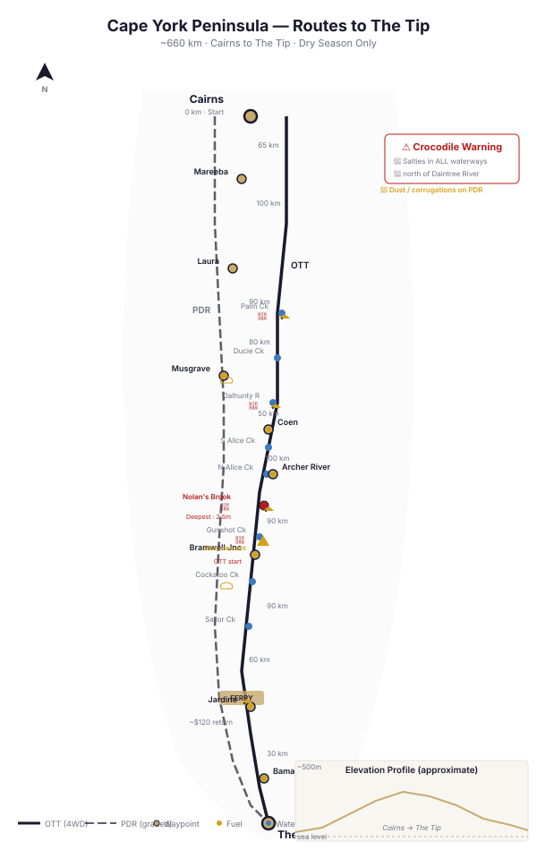

📑 Contents
Cape York Peninsula — Map & Track Reference

Cape York crossing routes — waypoints, creek crossings, and crocodile warnings (approx. 660 km Cairns to The Tip)Cape York Peninsula is the northernmost extremity of the Australian continent, a remote region of tropical savannah, melaleuca wetlands, and laterite escarpments in Far North Queensland. The journey to The Tip (Pajinka) is one of Australia's classic 4WD adventures, combining challenging creek crossings, red dirt, and the crossing of multiple major river systems.
Key Facts
| Attribute | Detail |
|---|---|
| Location | Far North Queensland, tip of Australia |
| Distance (Cairns to The Tip) | ~1,000 km via Peninsula Development Road (PDR) |
| Distance (OTT route) | ~950 km (slower, more crossings) |
| Typical duration | 7–10 days return from Cairns |
| Best season | June–October (dry season) |
| Wet season | November–May — most roads closed or impassable |
| Crocodile territory | Estuarine (saltwater) crocodiles in ALL waterways north of the Daintree River (~16°S) |
Major Routes
Peninsula Development Road (PDR)
- The main gravel highway from Lakeland to Bramwell Junction
- Graded annually, generally well maintained (can be rough in sections)
- Bypasses most of the difficult creek crossings on the OTT
- The most practical route for standard 4WD vehicles
- Distance: ~800 km from Lakeland to Bramwell Junction
Old Telegraph Track (OTT)
- The original route built for the Overland Telegraph Line
- The classic 4WD challenge — narrow, overgrown, deep creek crossings
- Starts at Bramwell Junction (turn east off the PDR)
- Crosses all major creeks: Palm, Ducie, Dalhunty, South Alice, North Alice, Nolan's Brook, Gunshot, Cockatoo, Sailor
- Many creek crossings have bypass roads — check depth before committing
- Do not attempt the OTT without a well-equipped 4WD and recovery gear
Bypass Roads
| Crossing | Bypass Available | Notes |
|---|---|---|
| Palm Creek | Yes | Southern bypass tracks |
| Gunshot Creek | Yes | Main bypass through private property (fee applies) |
| Nolan's Brook | No | Deepest crossing on the OTT. Check before crossing. Must cross to continue. |
| Cockatoo Creek | Yes | Northern bypass available |
| Sailor Creek | Yes | Bypass track available |
Creek Crossings (Old Telegraph Track)
Listed south to north:
| Crossing | Depth (Dry Season) | Difficulty | Notes |
|---|---|---|---|
| Palm Creek | 0.5–1.5 m | Moderate | Rocky bottom. Two entry options. |
| Ducie Creek | 0.3–1.0 m | Easy | Wide, shallow. |
| Dalhunty River | 0.5–2.0 m | Moderate to Hard | Sandy bottom. Can deepen quickly. |
| South Alice Creek | 0.5–1.5 m | Moderate | Rock shelf bottom. |
| North Alice Creek | 0.5–1.8 m | Moderate to Hard | Deep pool in centre. |
| Nolan's Brook | 1.5–2.5 m | Very Hard | Deepest crossing on OTT. Snorkel essential. Walk it first. Consider bypass. |
| Gunshot Creek | 0.5–1.8 m | Iconic Hard | Multiple entry lines. The famous drop-off. Walk your chosen line. |
| Cockatoo Creek | 0.5–1.2 m | Moderate | Sandy. |
| Sailor Creek | 0.3–0.8 m | Easy | Last crossing before Jardine. |
All crossings: walk the crossing first. Check for crocodiles. Look for submerged obstacles. Have recovery gear accessible.
Key Waypoints
| Waypoint | Distance from Cairns (approx) | Notes |
|---|---|---|
| Cairns | 0 km | Start. Stock up on everything. Last major town. |
| Mareeba | 65 km | Fuel, supplies |
| Lakeland | 165 km | Last sealed fuel for ~200 km. The start of the PDR. |
| Laura | 210 km | Historic pub. Aboriginal rock art (Split Rock). Fuel available. |
| Musgrave | 300 km | Historic telegraph station. Fuel, limited supplies. |
| Coen | 380 km | Fuel, pub, store. Last proper town. |
| Archer River | 430 km | Roadhouse. Fuel, camping. |
| Bramwell Junction | 530 km | Turn point. PDR continues west; OTT goes east from here. Fuel, camping. |
| Frenchman's Roadhouse | 560 km | Fuel on PDR (west route). |
| Jardine River Ferry | 620 km | Ferry across Jardine River ($). Fuel at north side. |
| Bamaga | 650 km | Main township on the tip. Accommodation, supplies. |
| The Tip (Pajinka) | 660 km | Northernmost point of Australia. Short 4WD track from Bamaga car park. |
Fuel
| Location | Distance from Cairns | Fuel Type | Notes |
|---|---|---|---|
| Cairns | 0 km | All | Last reliable major fuel. Fill up. |
| Mareeba | 65 km | Diesel, ULP | |
| Lakeland | 165 km | Diesel, ULP | Last sealed fuel. |
| Laura | 210 km | Diesel, ULP | Limited hours. |
| Musgrave | 300 km | Diesel, ULP | Expensive. Call ahead for hours. |
| Coen | 380 km | Diesel, ULP | Reliable. |
| Archer River | 430 km | Diesel, ULP | Roadhouse hours. |
| Bramwell Junction | 530 km | Diesel, ULP | Very expensive. Limited hours. |
| Jardine River | 620 km | Diesel, ULP | After ferry. Expensive. |
| Bamaga | 650 km | Diesel, ULP | Limited station. |
Fuel range required: 400 km minimum between fills. Carry 20 L extra as contingency.
Permits
| Permit / Fee | Required For | Cost (2025) | Notes |
|---|---|---|---|
| Jardine River Ferry Fee | Crossing the Jardine River | ~$120 return (vehicle) | Operates 8:00–17:00. Can queue in dry season. |
| Aboriginal Land Permits | Specific areas off main road | Varies | Not required for PDR/OTT/public roads. Required for some 4WD tracks on Cape York Peninsula Aboriginal Land. |
| National Park camping fees | Camping in NP areas | ~$7/person/night | QLD Parks online booking. |
| Gunshot Creek bypass | Dry-season bypass route | $20 (typical) | Private property. Pay at collection box. |
Best Season
- Optimal: June through October (dry season)
- Creek levels low
- Roads dry and open
- Temperatures 18–32°C
-
No flood risk
-
Shoulder: April–May, November
- May: some roads may still be closed after wet season
-
November: pre-monsoonal storms possible, high humidity, 35°C+
-
Closed: November through April (wet season)
- Many roads formally closed
- Creek crossings dangerous or impassable
- Crocodile activity higher in deeper water
- Do not attempt Cape York in the wet season
Crocodile Safety
This section is critical. Saltwater (estuarine) crocodiles inhabit EVERY waterway north of the Daintree River (~16°S). The assumption must always be: there is a crocodile in that water.
| Rule | Detail |
|---|---|
| Don't camp within 50 m of water | Crocodiles hunt at the water's edge, especially at dusk and dawn. |
| Walk crossings first | With a long stick. Probe the bottom and scan for crocs. |
| Never swim | No crossing with deep water is safe to swim. Even ankle-deep water at the edge can have a submerged croc. |
| Be alert at all crossings | Nolan's Brook, Gunshot Creek, Dalhunty River, Jardine River. |
| Dogs attract crocs | Do not bring dogs to Cape York. Crocodiles are attracted to splashing and movement of smaller animals. |
| Report problem crocs | Call QLD Department of Environment if you see large crocs near campsites. |
Freshwater crocs also inhabit Cape York waterways but are generally not dangerous to humans. However, if you cannot distinguish freshie from salties (narrow/snouted vs wide/jawed), assume it's a saltie.
Hazards
| Hazard | Details | Mitigation |
|---|---|---|
| Creek crossings | Deep water, submerged rocks, drop-offs, crocodiles | Walk first, snorkel, recovery gear, never cross alone |
| Dust | Extreme dust on the PDR, reduces visibility to zero in convoys | Maintain safe distance (200 m+), lights on |
| Corrugations | Heavy washboard can shake vehicles apart | Reduce tyre pressure (30–35 PSI), moderate speed, check bolts |
| Sharp rocks | Laterite and ironstone can cut sidewalls | 10-ply tyres recommended |
| Heat & humidity | 35°C+ with 80%+ humidity — rapid dehydration | 5 L water per person per day minimum |
| Remote medical access | Closest hospital outside Cairns is Weipa or Thursday Island | Comprehensive first aid kit, satellite phone |
| Bushfires | Dry season burns common — can close roads | Check QLD Rural Fire Service updates |
| Traffic | Tourist season (June–July) can be busy on PDR | Few issues on OTT |
Communications
| Method | Coverage | Notes |
|---|---|---|
| Mobile phone | Very limited | Signal only near towns (Coen, Bamaga). Nil on OTT. |
| UHF CB | Line-of-sight only | Channel 40 default. Useful within convoy. |
| Satellite phone | Full coverage | Iridium recommended. Thuraya marginal under heavy canopy. |
| PLB | Emergency only | Mandatory. Register with AMSA. |
| HF radio | Limited | VKS-737 network has gaps in Cape York. |
Typical Itinerary (7–8 days return, Cairns to Tip)
| Day | From | To | Highlights |
|---|---|---|---|
| 1 | Cairns | Lakeland / Laura | Stock up, Split Rock art site |
| 2 | Laura | Archer River | PDR, Musgrave stop |
| 3 | Archer River | Bramwell Junction | OTT start, creek crossings begin |
| 4 | Bramwell | OTT North / Jardine | Nolan's Brook, Gunshot, other crossings |
| 5 | Jardine | Bamaga / The Tip | Ferry, Pajinka |
| 6 | Bamaga | Return south | Seisia, tip area exploration |
| 7–8 | Return to Cairns | — | Via PDR or OTT |
Related Pages
- Outback 4WD Survival — General outback survival principles
- Route Planning — Fuel calculations, trip logistics
- What to Carry — Essential gear for remote travel
- Vehicle Recovery — Snatch straps, winching, recovery points
- Heat Survival — Managing heat and humidity
Vehicle Requirements
| Requirement | Minimum | Recommended |
|---|---|---|
| Tyres | LT all-terrain | Mud-terrain (OTT sections) |
| Spare tyres | 1 (plenty of tyre shops along PDR) | 1 + puncture repair kit |
| Fuel range | 400 km minimum (frequent fuel stops) | 500 km |
| Snorkel | Required for OTT creek crossings | Raised air intake essential |
| Suspension | Standard adequate for PDR | 2\" lift for OTT (improves approach/departure angles) |
| Recovery gear | Snatch strap, shackles, shovel | Maxtrax, winch (for OTT creek exits) |
| Water | 5L per person per day | 7L (hot and humid — you drink more) |
| Communications | 5W UHF, PLB | Sat phone (Telstra reception in most towns) |
| Trailer suitability | OK on PDR only. Do NOT take trailers on OTT. | Off-road camper possible on PDR, NOT on OTT. |
| Vehicle type | Any high-clearance 4WD for PDR. OTT: short wheelbase preferred, good approach/departure angles essential. | LandCruiser, Patrol, well-prepared dual-cab. Stock HiLux/Ranger will struggle on OTT without lift. |
Campsite Guide
South-to-North (9 days recommended, PDR + OTT)
| Night | Campsite | GPS | Facilities | Notes |
|---|---|---|---|---|
| 0 | Cairns / Mareeba | -16.9186, 145.7781 | Full town services | Last proper supermarket. Stock up. |
| 1 | Laura | -15.5580, 144.4490 | Roadhouse, camping, basic supplies | ~300 km from Cairns. Quinkan rock art nearby. |
| 2 | Musgrave Roadhouse | -14.7790, 143.5030 | Fuel, meals, camping, showers | ~140 km from Laura. Last reliable stop before OTT. |
| 3 | Archer River Roadhouse | -13.4350, 142.9400 | Fuel, camping, famous burgers, showers | ~110 km from Musgrave. Good base camp. |
| 4 | Bramwell Junction | -12.1020, 142.5730 | Roadhouse, camping, showers, meals | Start of OTT. Last fuel before Jardine. Bush camping available. |
| 5 | Bertie Creek / Dulhunty area | -12.0800, 142.5620 | Bush camping, no facilities | ~40 km from Bramwell. First OTT day — take it slow. Camp between creeks. |
| 6 | Cockatoo Creek / Sailor Creek | -12.0100, 142.5100 | Bush camping, no facilities | ~40 km further. Last OTT creek crossings. |
| 7 | Eliot Falls / Fruit Bat Falls | -11.4080, 142.4080 | Camping, toilets, swimming (croc-free) | ~120 km. BEST campsite on Cape York. Swim in crystal-clear water. Book ahead during peak. |
| 8 | Seisia / Loyalty Beach | -10.8870, 142.3180 | Caravan park, showers, shop, fuel | ~120 km. Base for The Tip visit. Ferry to Thursday Island from Seisia. |
| 9 | The Tip (Pajinka) + Return | -10.6880, 142.5280 | No facilities | Day trip to The Tip, return same day. 30 min walk from carpark to northernmost point. |
Camping notes: - National Park campsites need booking (QPWS website) during peak season (Jun–Sep) - Crocodile safety: camp 50m+ from all waterways north of Coen - Insects: mosquitoes and sandflies are intense — bring DEET, mosquito nets, and coils - Wet season (Nov–May): Most campsites are closed. Do not attempt. - Fires: allowed in designated fire pits only. Total fire ban days apply.
GPS Waypoints
All coordinates WGS84 datum.
Major Waypoints
| Location | Latitude | Longitude | Notes |
|---|---|---|---|
| Cairns (start) | -16.9186 | 145.7781 | Major city, last full services |
| Mareeba | -17.0050 | 145.4230 | Fuel, supplies, last major supermarket |
| Lakeland | -15.8650 | 144.8550 | Roadhouse, fuel, junction of PDR and Mulligan Highway |
| Laura | -15.5580 | 144.4490 | Quinkan rock art, roadhouse, basic supplies |
| Musgrave Roadhouse | -14.7790 | 143.5030 | Fuel, meals, accommodation |
| Coen | -13.9430 | 143.1990 | Fuel, pub, basic supplies, clinic |
| Archer River Roadhouse | -13.4350 | 142.9400 | Fuel, famous burgers, camping |
| Bramwell Junction Roadhouse | -12.1020 | 142.5730 | Junction of OTT and PDR — last fuel before Jardine |
| Jardine River Ferry | -11.1480 | 142.3810 | Ferry crossing (fee), crocodile habitat |
| Bamaga | -10.8920 | 142.3900 | Northernmost town, fuel, supermarket, hospital |
| The Tip (Pajinka) | -10.6880 | 142.5280 | Northernmost point of mainland Australia |
Fuel Stops (South to North)
| Location | Latitude | Longitude | Distance from Previous |
|---|---|---|---|
| Cairns | -16.9186 | 145.7781 | Start |
| Mareeba | -17.0050 | 145.4230 | 65km |
| Lakeland | -15.8650 | 144.8550 | 120km |
| Laura | -15.5580 | 144.4490 | 50km |
| Musgrave | -14.7790 | 143.5030 | 140km |
| Coen | -13.9430 | 143.1990 | 110km |
| Archer River | -13.4350 | 142.9400 | 65km |
| Bramwell Junction | -12.1020 | 142.5730 | 170km |
| Jardine River (limited supplies) | -11.1480 | 142.3810 | 120km |
| Bamaga | -10.8920 | 142.3900 | 45km |
OTT Creek Crossings (South to North)
| Creek | Latitude | Longitude | Notes |
|---|---|---|---|
| Palm Creek | -12.2440 | 142.6790 | First serious crossing, steep entry/exit |
| Ducie Creek | -12.1960 | 142.6470 | Rocky bottom, moderate depth |
| South Alice Creek | -12.1630 | 142.6200 | Sandy bottom |
| North Alice Creek | -12.1440 | 142.6100 | Rocky |
| Dulhunty River | -12.1050 | 142.5900 | Wide crossing |
| Bertie Creek | -12.0800 | 142.5620 | Narrow, deep banks |
| Cholmondeley Creek | -12.0520 | 142.5450 | Rocky bottom |
| Gunshot Creek | -12.0320 | 142.5300 | Iconic, multiple entry lines, very steep on main line |
| Cockatoo Creek | -12.0100 | 142.5100 | Wide sandy crossing |
| Sailor Creek | -11.9800 | 142.4900 | Last crossing before PDR |
Attractions
| Location | Latitude | Longitude | Notes |
|---|---|---|---|
| Fruit Bat Falls | -11.4420 | 142.4020 | Swimming, waterfall, croc-free |
| Eliot Falls / Twin Falls | -11.4080 | 142.4080 | Swimming, camping |
| Thursday Island (ferry from Seisia) | -10.5850 | 142.2190 | Ferry from Seisia |
Free Topographic Map Downloads
Geoscience Australia provides free 1:250,000 scale topographic maps of the entire continent under a CC BY 4.0 licence. These are the same maps used by emergency services, park rangers, and experienced outback travellers.
How to Download
Step 1: Go to the Geoscience Australia Product Catalogue
Step 2: Search for the map sheet code (e.g., "SC54-12") in the search box
Step 3: Click the result, then click Download (PDF, 3–8MB per sheet)
Relevant 1:250K Map Sheets
| Map Sheet | Code | Coverage |
|---|---|---|
| Cape York | SC54-12 | Northern tip, The Tip (Pajinka), Thursday Island |
| Jardine River | SC54-11 | Jardine River Ferry, Bamaga, Northern OTT |
| Weipa | SD54-03 | West coast, Weipa, bauxite mining |
| Coen | SD54-08 | Central Cape York, Coen, Musgrave |
| Cooktown | SD55-13 | Endeavour River, Battle Camp Road, Lakefield NP |
| Cape Melville | SD55-09 | East coast, Cape Melville NP, sand dunes |
Offline Mapping Apps (No Internet Needed)
For smartphone/tablet navigation without mobile reception:
- OsmAnd — Free offline maps using OpenStreetMap data. Download state maps before your trip. Works entirely offline with GPS.
- Avenza Maps — Free app. Load GeoPDF topo maps from Geoscience Australia (downloaded via the catalogue above). GPS works offline.
- ExplorOz Traveller — Australia-specific 4WD navigation. Paid app but designed for outback use. Offline maps included.
Paper Maps (Essential Backup)
Always carry paper maps. Electronics fail in heat, dust, and corrugations.
| Map | Publisher | Coverage |
|---|---|---|
| Hema Cape York | Hema Maps | 1:250K — Detailed track map with fuel stops, campsites, POIs |
| Westprint Cape York | Westprint Maps | 1:1M — Overview map with historical notes and track conditions |
Key Notes
- All GA maps use GDA94/WGS84 datum — fully compatible with GPS
- Print at 100% scale (A1 or A0 paper) for readable detail
- Carry hard copies — they do not require batteries or signal
- GA maps are CC BY 4.0 — free to download, use, share, and print commercially